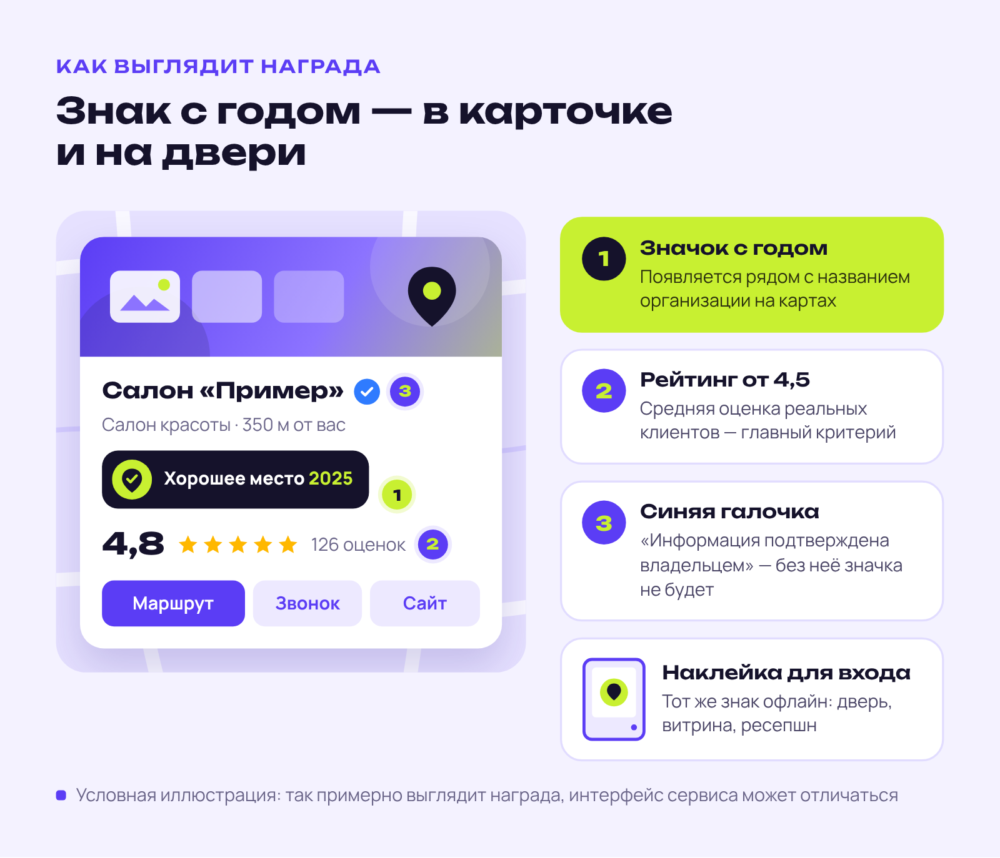
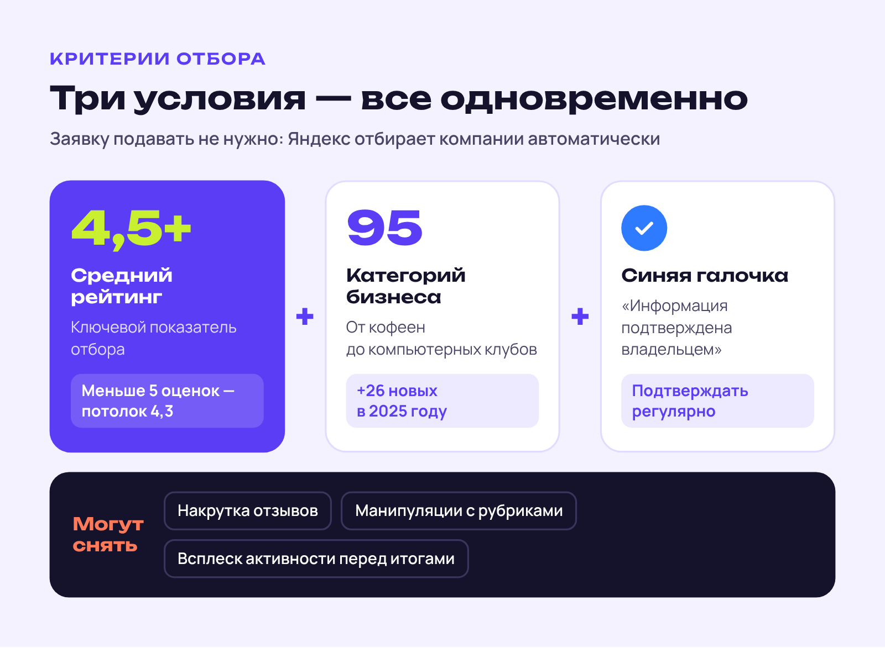
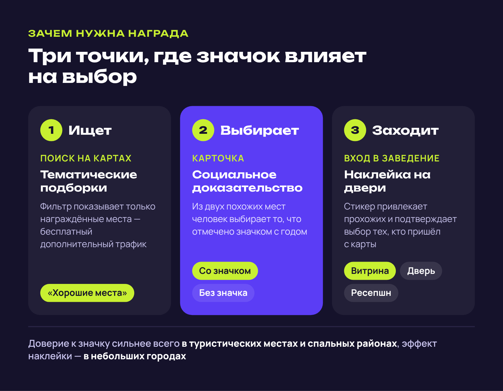
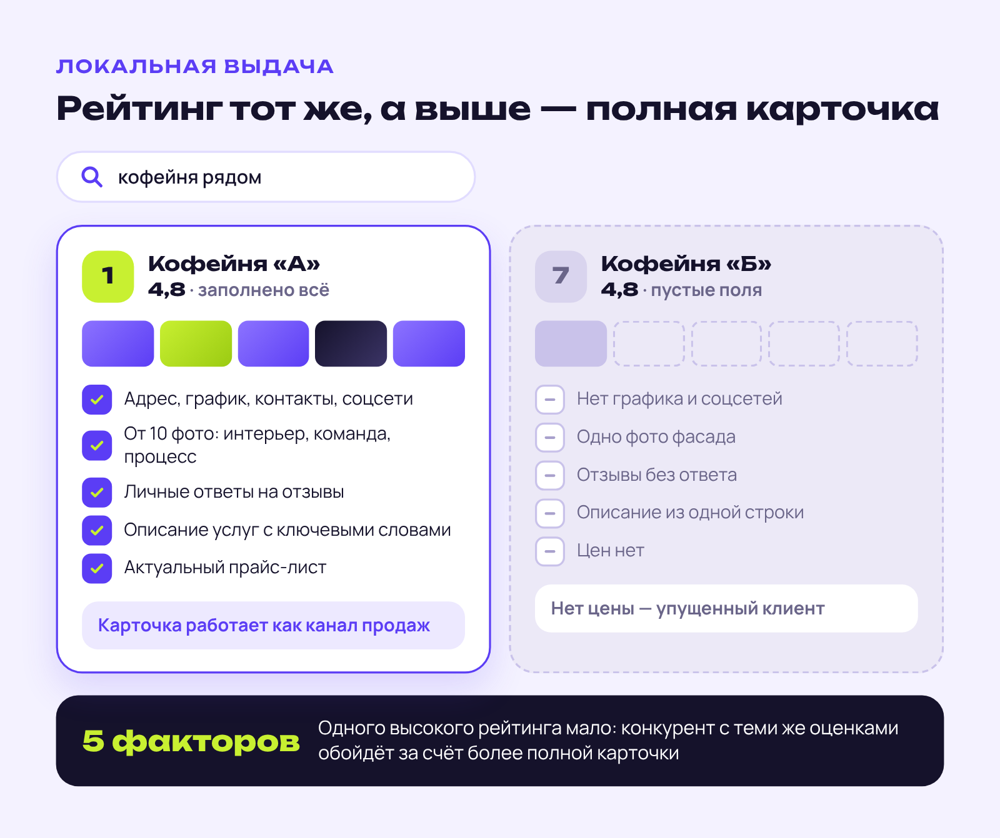
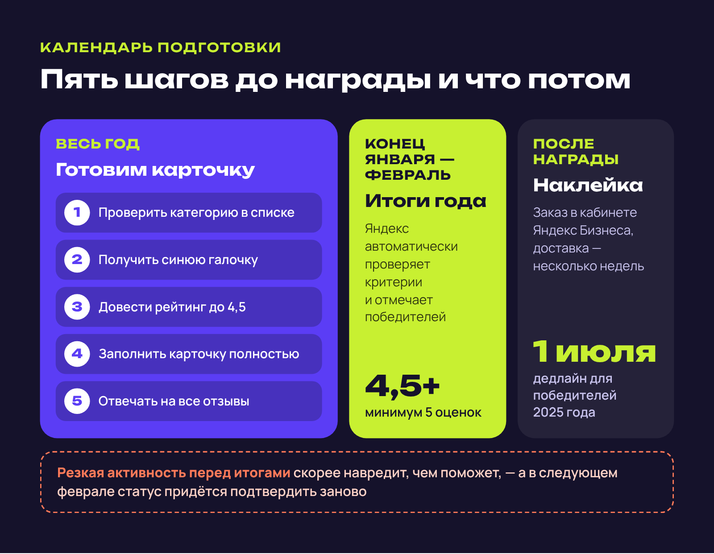
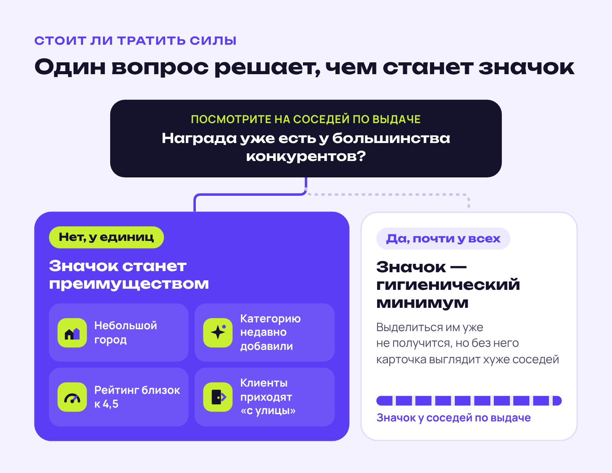

360-DIGITAL · Статья · геосервисы
Статья для блога 360-DIGITAL о награде Яндекса «Хорошее место»
360-DIGITAL360-digital.ru
360-DIGITAL — агентство геомаркетинга. Упаковывает карточки компаний в Яндекс Картах, 2ГИС и Google Maps, выстраивает сбор отзывов и управление репутацией, ведёт рекламу в Яндекс Бизнесе. Работает с медициной, фитнесом, ресторанами и автосервисами.
- Площадка
- Блог агентства 360-DIGITAL
- Формат
- Экспертная статья
- Год
- 2025
Агентству геомаркетинга требовались материалы, которые убедят владельцев локального бизнеса, что продвижение в Яндекс Картах приводит клиентов. Подготовила для блога агентства два кейса и экспертную статью.
Задача
Объяснить владельцам бизнеса, что даёт награда Яндекса «Хорошее место» и как её получить.
Решение
Опиралась на официальные условия Яндекса, дала практические рекомендации без навязчивой рекламы услуг.
Результат
Статья в топ-10 Яндекса по запросу «хорошее место яндекс как получить». За три месяца — 2,6 тыс. визитов.
Яндекс «Хорошее место»: как получить награду и зачем она нужна бизнесу
Каждый год в феврале Яндекс подводит итоги и отмечает компании, которые больше всего нравятся клиентам. Награда «Хорошее место» появилась ещё в 2018 году, но по-настоящему популярной стала в последние пару лет. В 2025 году её получили более 160 тысяч организаций по всей России — вдвое больше, чем годом ранее.
Для кафе, салонов красоты, медицинских центров и других офлайн-точек этот знак стал маркером качества. Посетители видят наклейку на двери, замечают отметку «Хорошее место» на Яндекс Картах — и охотнее заходят сюда, а не к конкурентам без значка.
Разберёмся, что стоит за наградой, как её получить и в каких случаях на неё действительно стоит тратить силы.
Что такое знак «Хорошее место» от Яндекса
Знак «Хорошее место» — не реклама и не платная услуга. Яндекс вручает его компаниям, которые стабильно получают высокие оценки от реальных клиентов. Проще говоря — бизнесам, которые любят и рекомендуют.
Награда существует в двух форматах. В Яндекс Картах рядом с названием организации появляется специальная иконка с указанием года: её видят все, кто открывает карточку или ищет заведение поблизости.

Второй формат — для офлайна. Яндекс выпускает фирменные наклейки, и компании размещают их на входной двери, витрине или стойке ресепшн. Так знак встречает клиента ещё до того, как он переступит порог.
С 2025 года правила изменились. Раньше награду за прошедший год вручали только в следующем. Теперь на отметке стоит текущий год: компании, награждённые в 2025-м, получают знак «Хорошее место 2025».
Год на стикере выбран не случайно: по исследованиям Яндекса, наклейка с актуальным годом вызывает у посетителей больше доверия.
Критерии получения награды «Хорошее место»
Заявку подавать не нужно — Яндекс отбирает победителей автоматически. Но в список претендентов попадают только компании, которые одновременно выполняют три обязательных условия. Сервис проверяет их ежегодно перед награждением.

Если хотя бы одно условие не выполнено, высокий рейтинг или популярность не помогут. Разберём каждое подробнее:
- Рейтинг 4,5 и выше. Средняя оценка компании должна быть не ниже этой планки. Учтите, как она считается: пока у организации меньше пяти оценок, рейтинг не поднимется выше 4,3.
- Подходящий вид деятельности. В 2025 году в проекте участвуют компании из 95 категорий — от ресторанов и кофеен до студий йоги и компьютерных клубов. Список расширяется: в этом году добавили 26 новых направлений, в том числе турбазы, фотостудии и медицинские лаборатории.
- Синяя галочка в профиле. Карточка должна иметь отметку «Информация подтверждена владельцем» — без неё награду не дадут даже при идеальном рейтинге. Галочку нужно периодически подтверждать: заходить в профиль и обновлять данные.
При этом Яндекс оставляет за собой право отказать в награде или отозвать её. Накрутка отзывов на Яндекс Картах, манипуляции с рубриками, резкий всплеск активности перед подведением итогов — всё это грозит дисквалификацией. Алгоритмы уже неплохо распознают такие схемы.
Реальная польза для бизнеса: миф или правда
Среди предпринимателей нет единого мнения о ценности награды. Одни считают её обязательной для любого достойного заведения. Другие замечают: в крупных городах значок есть почти у всех, какой тогда смысл?

Истина, как обычно, посередине: польза есть, но её размер зависит от города и ниши. Начнём с того, что награда даёт в любом случае.
Попадание в тематические подборки
Карточки с наградой попадают в специальные разделы «Хороших мест» на Яндекс Картах. Пользователи могут отфильтровать выдачу и увидеть только награждённые заведения. Фактически это дополнительный канал бесплатного трафика.
Доверие клиентов
Значок работает как социальное доказательство. Когда человек выбирает между двумя кафе и у одного есть наклейка «Хорошее место», а у другого нет, выбор становится проще. Особенно это заметно в туристических местах и спальных районах, где люди ищут что-то поблизости впервые.
Офлайн-эффект наклейки
Яркий стикер на входе привлекает внимание прохожих: человек видит знакомый знак и понимает, что здесь хорошо обслуживают. Сильнее всего этот эффект в небольших городах, где отметкой может похвастаться далеко не каждое заведение.
Географический фактор: где награда важнее
Здесь есть важный нюанс. В Москве и Санкт-Петербурге награда для многих категорий уже стала нормой: среди салонов красоты, например, значок есть у 77% заведений. В такой ситуации отсутствие отметки скорее настораживает, чем её наличие выделяет.
В регионах картина другая. В категории «Сауны» в Воронеже награду получили всего 4 организации из 79. Таким бизнесам стоит приложить усилия: на фоне конкурентов они будут выглядеть заметно выигрышнее.

По статистике Яндекса, больше всего «Хороших мест» на душу населения в Краснодаре — 36 организаций на 10 тысяч жителей. На втором месте Санкт-Петербург с показателем 30, на третьем — Москва с 26. Меньше всего награждённых компаний в Челябинске, Красноярске и Омске — а значит, там значок пока работает как настоящее конкурентное преимущество.
Геомаркетинг: комплексный подход к продвижению на картах
Награда «Хорошее место» — лишь видимая часть большой работы по продвижению бизнеса на Яндекс Картах. Это направление называют геомаркетингом — системой привлечения клиентов через геосервисы.
Суть простая: пользователь вводит запрос вроде «кофейня рядом» или «стоматология поблизости» и получает список заведений на карте. Кто оказался в верхних строчках выдачи, тот и забирает большую часть обращений.
Карточка организации на картах при грамотной работе становится полноценным каналом продаж. Потенциальный клиент смотрит фотографии, читает отзывы, изучает прайс — и принимает решение, даже не заходя на сайт компании. Важно правильно упаковать информацию и регулярно её обновлять.
Что влияет на позиции в локальной выдаче
Алгоритмы Яндекса учитывают при ранжировании множество параметров. Одного высокого рейтинга недостаточно: конкуренты с такими же оценками могут обходить вас за счёт более полной карточки. Вот на что стоит обратить внимание в первую очередь:
- Полнота профиля. Название, точный адрес, контакты, график работы, ссылки на соцсети — всё должно быть указано и актуально. Пустые поля снижают доверие системы.
- Качественные фотографии. Минимум 10 снимков высокого разрешения: интерьер, команда, процесс работы. Для ресторанов — блюда, для салонов красоты — работы мастеров.
- Работа с отзывами. Регулярные ответы и на позитив, и на негатив. Персональные ответы ценятся выше шаблонных, а репутация на картах напрямую влияет на конверсию.
- SEO-оптимизация описаний. Релевантные ключевые слова в названии и описании услуг помогают попадать в выдачу по целевым запросам.
- Актуальный прайс-лист. Пользователи часто сравнивают цены прямо в карточках, и карточка без цен теряет клиентов.
Заниматься всем этим самостоятельно можно, но это требует времени и навыков. Агентство 360-digital.ru специализируется на продвижении на картах и управлении репутацией в геосервисах. Мы полностью упакуем карточки на Яндекс Картах, 2ГИС и Google Maps: подберём качественные фотографии, составим SEO-оптимизированные описания, организуем ежедневную работу с отзывами.

Отдельная услуга — легальное удаление необоснованного негатива: заказные отзывы конкурентов обжалуем по правилам площадок и убираем из профиля.
Как не потерять награду
Получить значок «Хорошее место» — полдела. Статус нужно подтверждать каждый год: Яндекс пересматривает результаты в феврале, и компания может выпасть из списка, если перестанет соответствовать критериям.
Одна из самых болезненных причин потери награды — единичный негативный отзыв при небольшом числе оценок. Если у компании всего 10 отзывов со средней оценкой 4,6, одна «единица» может уронить рейтинг на Яндекс Картах ниже критической отметки 4,5.
Выход один — постоянно наращивать число положительных отзывов. Не накручивать (алгоритмы это заметят), а мотивировать реальных клиентов делиться впечатлениями: QR-коды на чеках, напоминания от администраторов, бонусы за обратную связь.
Пошаговая инструкция: готовим карточку к награждению
Итоги года Яндекс подводит в конце января — начале февраля, поэтому готовить карточку нужно заранее. Откладывать на последний момент бессмысленно: резкая активность перед подведением итогов скорее навредит, чем поможет.

Как получить «Хорошее место» от Яндекса в 2025 году? Вот последовательность действий:
- Проверьте основной вид деятельности. Убедитесь, что ваша категория участвует в награждении. Полный перечень есть на сайте Яндекса.
- Подтвердите владение карточкой. Получите синюю галочку «Информация подтверждена владельцем» и регулярно обновляйте данные, чтобы она не исчезла.
- Доведите рейтинг до 4,5. Собирайте честные отзывы клиентов. Помните: минимум пять оценок нужны просто для технической возможности достичь этой планки.
- Заполните карточку полностью. Фотографии, услуги, цены, контакты — чем больше информации, тем лучше позиции в выдаче.
- Отвечайте на отзывы. И на хорошие, и на плохие — развёрнуто, по существу, без шаблонов. Это влияет и на лояльность клиентов, и на алгоритмы.
После получения награды закажите наклейку в личном кабинете Яндекс Бизнеса — и успейте до дедлайна: победители 2025 года могли оформить заказ до 1 июля. Доставка занимает несколько недель, так что затягивать не стоит.
Стоит ли тратить силы на получение награды
Ответ зависит от вашей ситуации. Вот сценарии, в которых работа над наградой даёт наибольшую отдачу:
- Бизнес в небольшом городе. Там, где конкуренты ещё не освоили геомаркетинг, награда станет реальным преимуществом.
- Категорию недавно добавили в список. Если раньше ваш вид деятельности не участвовал в награждении, сейчас самое время оказаться среди первых.
- Рейтинг уже высокий. Если оценка близка к 4,5, доработка карточки потребует минимум усилий, а эффект будет ощутимым.
- Бизнес живёт за счёт локального трафика. Для заведений, где важен поток посетителей «с улицы», на вес золота каждый дополнительный инструмент привлечения.
Если награда уже есть у большинства конкурентов, работа над карточкой компании на картах всё равно нужна — но уже как гигиенический минимум, а не способ выделиться. Без значка вы рискуете выглядеть хуже соседей по выдаче.

Чтобы понять, какой сценарий ваш, откройте карты и посмотрите на соседей по выдаче в своей категории. В Москве и Петербурге значок может оказаться почти у всех, в регионах — у единиц, и от этого зависит, чем он станет для вашего бизнеса.
Подведём итоги
Яндекс «Хорошее место» — не волшебная таблетка, которая мгновенно приведёт толпы клиентов, но и не бесполезная формальность. Лучше всего награда работает вместе с остальным продвижением в геосервисах.
Ценность значка зависит от контекста: города, ниши, уровня конкуренции. Где-то он станет источником трафика, где-то — просто подтверждением статуса. Но работа над рейтингом на Яндекс Картах и качеством карточки окупается в любом случае, даже без награды.
Главное — начать заранее. Следить за отзывами, обновлять информацию, просить клиентов об обратной связи. Тогда награда придёт как закономерный результат, а вместе с ней вырастут позиции в локальной выдаче и поток посетителей.
Если на самостоятельную работу не хватает времени, задачу можно передать агентству 360-digital.ru, которое знает все тонкости продвижения на картах. Наши специалисты бесплатно проведут аудит, покажут ваши позиции среди конкурентов и рассчитают потенциал роста обращений. Первые результаты — рост позиций в выдаче и целевых действий — обычно видны уже через месяц работы.